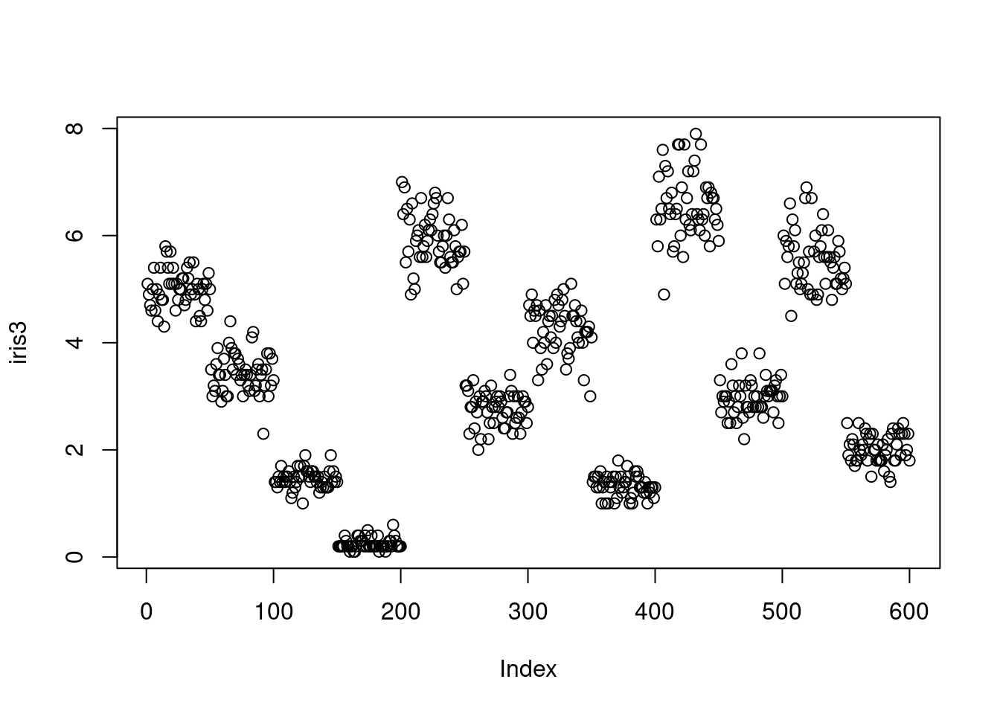
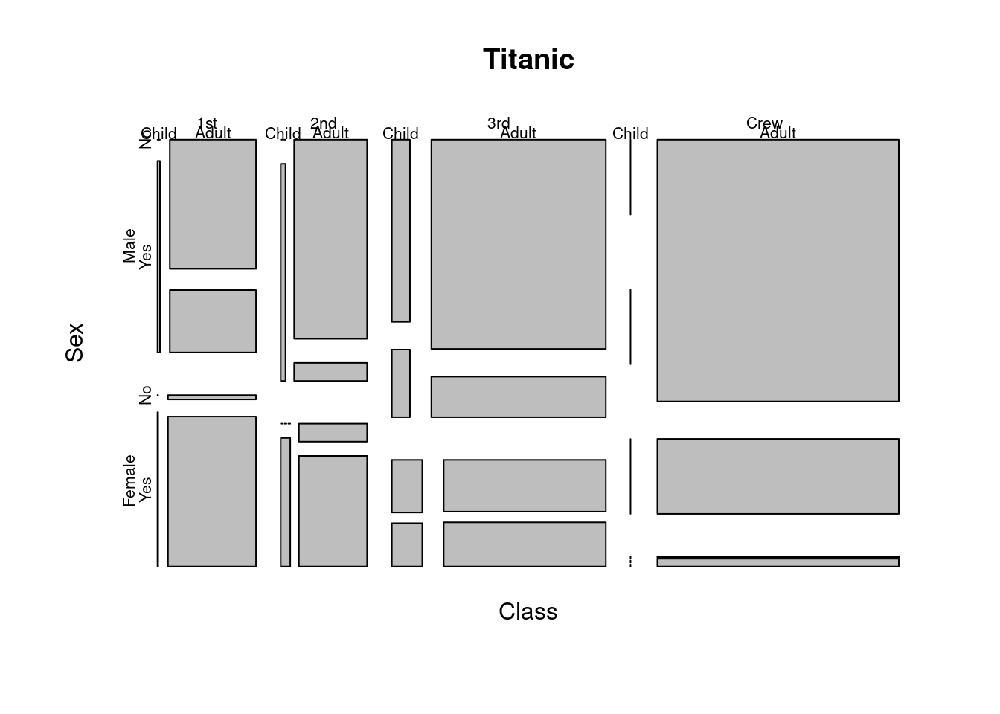

plot(iris)
plot(iris)
plot(iris3)
plot(Titanic)
install.packages('downloadthis')# Downloading packages -------------------------------------------------------
- Downloading downloadthis from CRAN ... OK [2.9 Mb in 0.33s]
- Downloading readr from CRAN ... OK [805.1 Kb in 0.23s]
- Downloading clipr from CRAN ... OK [48.8 Kb in 0.23s]
- Downloading crayon from CRAN ... OK [154.9 Kb in 0.33s]
- Downloading hms from CRAN ... OK [94.3 Kb in 0.27s]
- Downloading pkgconfig from CRAN ... OK [17.1 Kb in 0.23s]
- Downloading tibble from CRAN ... OK [656.3 Kb in 0.2s]
- Downloading fansi from CRAN ... OK [298.7 Kb in 0.22s]
- Downloading pillar from CRAN ... OK [629.4 Kb in 0.2s]
- Downloading utf8 from CRAN ... OK [142.7 Kb in 0.23s]
- Downloading vroom from CRAN ... OK [904.7 Kb in 0.22s]
- Downloading bit64 from CRAN ... OK [561.4 Kb in 0.21s]
- Downloading bit from CRAN ... OK [1.1 Mb in 0.2s]
- Downloading tidyselect from CRAN ... OK [216.9 Kb in 0.18s]
- Downloading withr from CRAN ... OK [229.3 Kb in 0.22s]
- Downloading tzdb from CRAN ... OK [624.9 Kb in 0.21s]
- Downloading cpp11 from CRAN ... OK [273.6 Kb in 0.22s]
- Downloading progress from CRAN ... OK [82.6 Kb in 0.17s]
- Downloading prettyunits from CRAN ... OK [151.5 Kb in 0.19s]
- Downloading writexl from CRAN ... OK [167.2 Kb in 0.18s]
- Downloading bsplus from CRAN ... OK [94.4 Kb in 0.2s]
- Downloading purrr from CRAN ... OK [473.8 Kb in 0.2s]
- Downloading lubridate from CRAN ... OK [942.1 Kb in 0.2s]
- Downloading generics from CRAN ... OK [71.5 Kb in 0.21s]
- Downloading timechange from CRAN ... OK [166.7 Kb in 0.18s]
- Downloading zip from CRAN ... OK [619.9 Kb in 0.23s]
- Downloading ggplot2 from CRAN ... OK [4.7 Mb in 0.23s]
- Downloading gtable from CRAN ... OK [209.2 Kb in 0.27s]
- Downloading isoband from CRAN ... OK [1.6 Mb in 0.25s]
- Downloading scales from CRAN ... OK [684.1 Kb in 0.19s]
- Downloading farver from CRAN ... OK [2.2 Mb in 0.18s]
- Downloading labeling from CRAN ... OK [58.4 Kb in 0.18s]
- Downloading munsell from CRAN ... OK [235.4 Kb in 0.2s]
- Downloading colorspace from CRAN ... OK [2.5 Mb in 0.25s]
- Downloading RColorBrewer from CRAN ... OK [51.8 Kb in 0.18s]
- Downloading viridisLite from CRAN ... OK [1.2 Mb in 0.26s]
Successfully downloaded 36 packages in 14 seconds.
The following package(s) will be installed:
- bit [4.0.5]
- bit64 [4.0.5]
- bsplus [0.1.4]
- clipr [0.8.0]
- colorspace [2.1-0]
- cpp11 [0.4.7]
- crayon [1.5.2]
- downloadthis [0.3.3]
- fansi [1.0.6]
- farver [2.1.1]
- generics [0.1.3]
- ggplot2 [3.5.1]
- gtable [0.3.5]
- hms [1.1.3]
- isoband [0.2.7]
- labeling [0.4.3]
- lubridate [1.9.3]
- munsell [0.5.1]
- pillar [1.9.0]
- pkgconfig [2.0.3]
- prettyunits [1.2.0]
- progress [1.2.3]
- purrr [1.0.2]
- RColorBrewer [1.1-3]
- readr [2.1.5]
- scales [1.3.0]
- tibble [3.2.1]
- tidyselect [1.2.1]
- timechange [0.3.0]
- tzdb [0.4.0]
- utf8 [1.2.4]
- viridisLite [0.4.2]
- vroom [1.6.5]
- withr [3.0.0]
- writexl [1.5.0]
- zip [2.3.1]
These packages will be installed into "~/work/martin-ingram.github.io/martin-ingram.github.io/renv/library/R-4.2/x86_64-pc-linux-gnu".
# Installing packages --------------------------------------------------------
- Installing clipr ... OK [installed binary and cached in 0.47s]
- Installing crayon ... OK [installed binary and cached in 0.47s]
- Installing pkgconfig ... OK [installed binary and cached in 0.45s]
- Installing hms ... OK [installed binary and cached in 0.62s]
- Installing fansi ... OK [installed binary and cached in 0.48s]
- Installing utf8 ... OK [installed binary and cached in 0.48s]
- Installing pillar ... OK [installed binary and cached in 0.77s]
- Installing tibble ... OK [installed binary and cached in 0.84s]
- Installing bit ... OK [installed binary and cached in 0.55s]
- Installing bit64 ... OK [installed binary and cached in 0.54s]
- Installing withr ... OK [installed binary and cached in 0.49s]
- Installing tidyselect ... OK [installed binary and cached in 0.62s]
- Installing cpp11 ... OK [installed binary and cached in 0.53s]
- Installing tzdb ... OK [installed binary and cached in 0.59s]
- Installing prettyunits ... OK [installed binary and cached in 0.45s]
- Installing progress ... OK [installed binary and cached in 0.6s]
- Installing vroom ... OK [installed binary and cached in 0.94s]
- Installing readr ... OK [installed binary and cached in 0.86s]
- Installing writexl ... OK [installed binary and cached in 0.47s]
- Installing purrr ... OK [installed binary and cached in 0.62s]
- Installing generics ... OK [installed binary and cached in 0.43s]
- Installing timechange ... OK [installed binary and cached in 0.46s]
- Installing lubridate ... OK [installed binary and cached in 0.67s]
- Installing bsplus ... OK [installed binary and cached in 0.58s]
- Installing zip ... OK [installed binary and cached in 0.52s]
- Installing gtable ... OK [installed binary and cached in 0.61s]
- Installing isoband ... OK [installed binary and cached in 0.57s]
- Installing farver ... OK [installed binary and cached in 0.74s]
- Installing labeling ... OK [installed binary and cached in 0.44s]
- Installing colorspace ... OK [installed binary and cached in 0.77s]
- Installing munsell ... OK [installed binary and cached in 0.51s]
- Installing RColorBrewer ... OK [installed binary and cached in 0.44s]
- Installing viridisLite ... OK [installed binary and cached in 0.5s]
- Installing scales ... OK [installed binary and cached in 0.66s]
- Installing ggplot2 ... OK [installed binary and cached in 1.2s]
- Installing downloadthis ... OK [installed binary and cached in 0.74s]
Successfully installed 36 packages in 23 seconds.downloadthis::download_this(cars,
output_name = "test_cars_data.xlsx",
output_extension = ".xlsx")